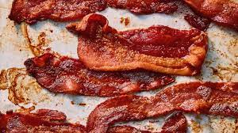

Bacon
Bacon is a cured meat product made from pork belly, typically sliced thin and either pan-fried or baked until crispy. Known for its savory, smoky flavor and crispy texture, bacon is a popular ingredient in various dishes or enjoyed on its own as a breakfast staple.